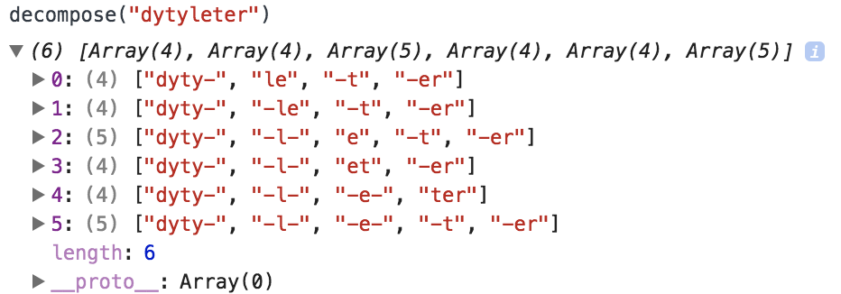
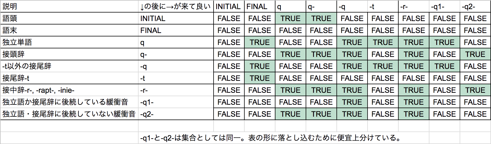
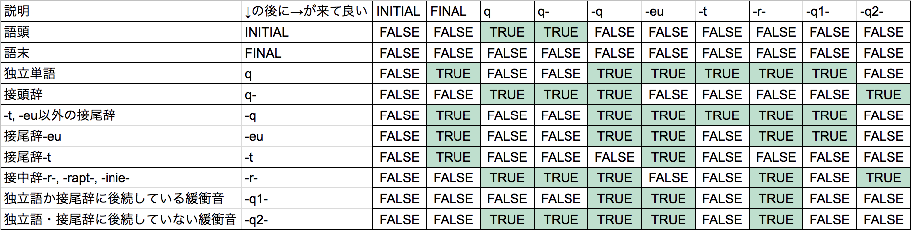

「リパライン語単語分解器」の開発ログです。
使用する単語リストは、リパライン語OTM-JSONから頭字語などを取り除いたこのファイルから、ピリオドやスペースの入った人名や略号など（la+単語として登録されていたものを含む）などを除いたファイル。6557項目が登録されている。
さて、実はリパライン語には「単語と単語がくっ付くときは-r-でしかないのと、-r-はそこまで頻繁に使われないから大半の単語の語幹は一意に決められる」という特性がある。登録されている項目をハイフンの位置により「独立単語」「前置辞」「語中辞」「語尾辞」に分類すれば、独立語と独立語の間には-r-が入るということである。
要するに、「どちらかの側にはハイフンが入っている」という原則と考えれば良い。例を挙げれば、dytyleterはdyty-, -l-, et, -erと分解されるが、このとき項目と項目の間には1つ以上のハイフンが入っている。
とりあえず素朴な実装をして、「いや、この分解はありえない」とかを指摘してもらった方がいいか
— .sozysozbot.@hsjoihs (@sosoBOTpi) 2017年10月25日
とりあえず、文法的な考察をする前に、この条件だけで全探索するプログラムを書いてみるか。やってくうちに追加条件が出てくるでしょう
とりあえず、ハイフンの有無で4ファイルに分離。
規則も記述してJSONにする。
実装できた。
いくつか情報が来たので、それを元に改良する。
まず「語中辞は後方に形態素を要求するが、独立単語(語根)を直接繋げられるのは-r-と-rapt-のみである。-inie-は数詞のみ、その他緩衝音類は後方には接辞を要求する。」とのこと。これに基づいて規則を改定する。
現状の規則はこんな感じ。
[ ["INITIAL","q"], ["INITIAL","q-"], ["q","-q"], ["q","-q-"], ["q-","q"], ["q-","q-"], ["q-","-q"], ["q-","-q-"], ["-q","-q"], ["-q","-q-"], ["-q-","q"], ["-q-","q-"], ["-q-","-q"], ["-q-","-q-"], ["q","FINAL"], ["-q","FINAL"] ]
語中辞を"-q-"と"-r-"に分離して…っと、待てよ。「緩衝音類は後方には接辞を要求する。」にしてしまうとdytyleterが通らないな。「前に来てるのが接辞なら後ろは単語でもいい」のかと聞いてみたところ、『「緩衝音類は前後のいずれかに接辞を要求する」かなあ』とのこと。
さて、これをどう落とし込むかだが、まあ「同一の-q-を2種類立てる」が一時しのぎとしては有効かな。
これをやると重複が発生するので、重複を消去。
いや、うまくやれば解決できるか。「qに後続した場合だけ-q1-、それ以外は-q2-のみ」でいい。
よし重複解決。
しかし["la","-axm","-el","-e-","n"]は弾かれない。これを弾くなら、「緩衝音類は、前に接頭辞が来るか後ろに接尾辞が来るかの2択だ」と定式化すべきだな。
「la-stan-a-'sみたいなことはあるので前後同時に接辞が来ることもある（まあ、弾くわけではないからこれも含むか）」と言われた。まあそうよね。
とりあえず実装できた。
ff「特別警察」が辞書に紛れ込んでいたので削除。
-tは格語尾（「基本的に-'s, -'i, -'cにしかつかないが、-'lt, -'scitの形とかもあるかもしれない」とのこと）とか分離標識とか複代副詞とかにしかつかないらしい。そして必ず語末である。
とりあえず、「必ず語末」「接頭辞・語中辞の後には来ない」が言えるので実装する。
実装した。
「緩衝音が連続することは無い」と言われた。実装した。["dyty-","-l-","et","-er"], ["pask-","-effe","-snej"], ["la","-axm","-el","-en"]が完璧に分解され、「緩衝音が連続しないことは重要だったんやな……」「雰囲気で読んでるからほんとこういう実装をする時に本質が見えてくるのすこ」となった。よきかな。
このことを自慢できるように、複数の単語を入力できるようにした。
句読点を自動で消して、勝手に小文字にするようにもした。
-b- -f- -g- -j- -kh- -rj- -rv- -rw- -rz- -s- -ska -ski -w- -xiciは廃止されたので、「基本無効化して、オプションで有効化させるなどしたい」「廃止された緩衝子音はほとんど出てこないのでそっちの方がいい」となった。
実装した。
「音楽について考察する」でte ke xa sa nje vi fyが非真理設定になった。これにより、xace ["xa","-ce"] 「純粋なミ」とかが潰せる。よってこいつらを辞書から削除。
kymerf 【名詞】裁判官 【名詞】(アレス裁判における)キルメプ [2017:kil mep:FAS:裁断者]
せっかく登録したkymerfが廃止された。ついでにattadzem, nabi'a, splieng, tatiryzurtmilも廃止された。よって以上5単語を辞書から削除。
現状の規則を把握するのがそろそろ大変になってきたので、表を作る。
作った。
DMで「詩語だったらeu--euがどこにでも出て来るので、mi'steuみたいな使い方も許容される」「緩衝音の前後にeuを置くのはセーフ」「普通の接辞と同じで挟まれて語中に出て来ることもある」「二つの独立語を-eu-で結ぶのはアウト」ということを教わった。
ということで、接頭辞eu-と接尾辞-euの挙動はほかのやつらとは異なりますな。-r-群・-q1-群・-q2-群にも当てはまらないので、接中辞として立てる必要もない。
j.v「-tの前に緩衝音は禁止だが、緩衝音ではない-euについてもmi'seutはアウトよな？」 fafs f. sashimi「見たことないし、そんな書き方したくないけどアウトとまでは厳しくないなあ。まあアウトで良いかと思うけど」 j.v「じゃあアウトで（どっちに設定しても手間は変わらんが、まあアウトでいいでしょ）」 fafs f. sashimi「多分実例がない。格助詞と-tは間が無菌状態が好まれるので(意味不明)」
また、「単語+緩衝音+eu」で語が終わるのはセーフで、artergeu[arte-rg-eu]とか可能だそうだ。
「接頭辞+eu」で1語判定、はアウトだが、eu(m)oは単語になりうる(だが意味がない)ので「eu- + 接尾辞」はセーフ。
「単語-r-eu」はアウトだが、「単語-r-eu-単語」はセーフ。ただ、これは「単語」と「eu-単語」を-r-で繋いだもの。
-eu-euは「許可だよ、やらないけど」とのこと。「普通緩衝子音が挟まれ, -eumeuになるけどやるときはやるからなあ」と。
eu-についても同様の考察を行なったが、結果として「普通の接頭辞と完全に同じ挙動である」ということがわかった。
また、*dytyrlarta案件:「q-の後に-r-は来られないのに許容している」というバグを見つけた。あと、「品詞語尾以外の殆どの接辞同士の結合のみで語を構成することはおそらく認められない」という情報が入った（つまり*dytydirはダメ）ので、次回のアプデで修正をかける。
結果、表は次のようになる。
「表示をリパーシェに変更したり、しなかったりできるチェックボックス」が欲しいと言われたので作った。
100tvamとか3'dとかに対応した。
「fente2とかdyty100'dみたいな表現って（意味が通らないのはともかくとして）文法上合法？」と訊いたところ、「合法」とのこと。ちなみにFixa.siertija氏が「fente2、何かに使えそう。コンピュータに関係する反対運動の総称とか(ゲームしてたりスマホ使ってたら頭が悪くなるみたいな類い)」などと興味深い発想をしていた。（以上のやり取りもTWTで行われた。）